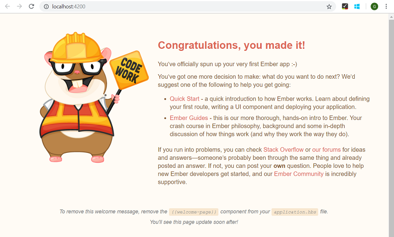
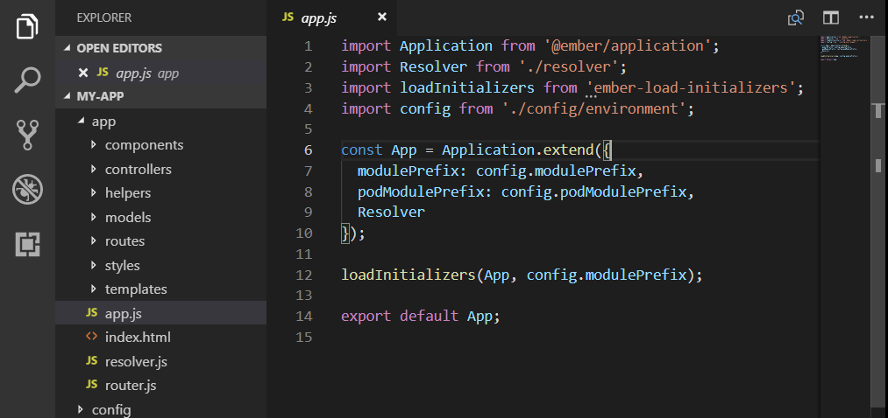
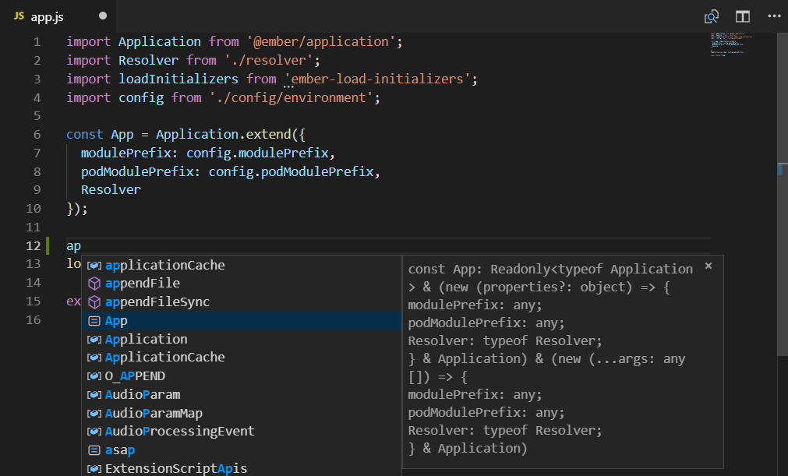
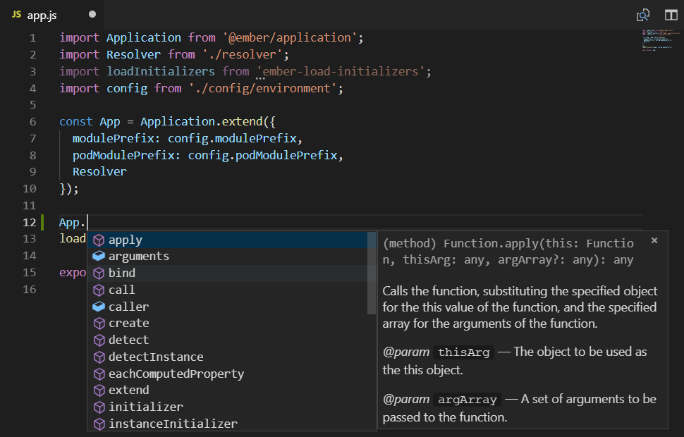
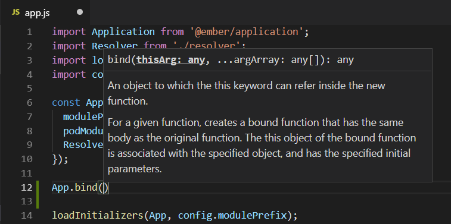
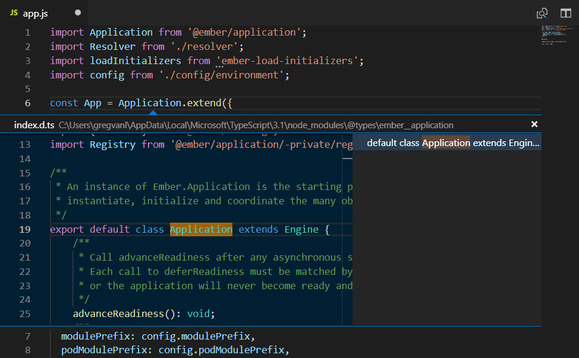
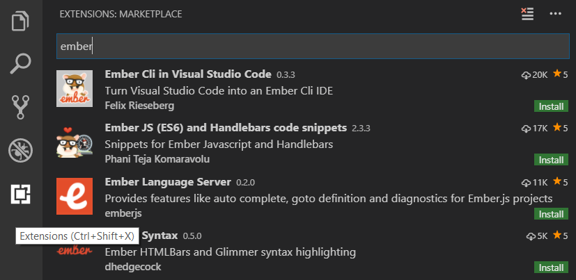

Using Ember in Visual Studio Code
Ember is a popular JavaScript framework for building web application user interfaces. The Visual Studio Code editor supports Ember.js IntelliSense and code navigation out of the box.
Welcome to Ember
We'll be using the Ember CLI for this tutorial. To install and use the command line interface as well as run the Ember.js application server, you'll need the Node.js JavaScript runtime and npm (the Node.js package manager) installed. npm is included with Node.js which you can install from Node.js downloads.
Tip: To test that you have Node.js and npm correctly installed on your machine, you can type
node --versionandnpm --version.
To install Ember CLI, in a terminal or command prompt type:
npm install -g ember-cli
This may take a few minutes to install. You can now create a new Ember.js application by typing:
ember new my-app
my-app is the name of the folder for your application. This may take a few minutes to create the Ember application in JavaScript and install its dependencies.
Let's quickly run our Ember application by navigating to the new folder and typing ember serve to start the web server and open the application in a browser:
cd my-app
ember serve
Once you see the Build successful message, you can open your browser to http://localhost:4200 and you should see "Congratulations, you made it!". You can press kbstyle(Ctrl+C) to stop the Ember server.

To open your Ember application in VS Code, open another terminal (or command prompt) and navigate to the my-app folder and type code .:
cd my-app
code .
Syntax highlighting and bracket matching
Now expand the app folder and select the app.js file. You'll notice that VS Code has syntax highlighting for the various source code elements and, if you put the cursor on a parentheses, the matching bracket is also selected.

IntelliSense
As you start typing in app.js, you'll see smart suggestions or completions.

After you select a suggestion and type ., you see the types and methods on the object through IntelliSense.

VS Code uses the TypeScript language service for its JavaScript code intelligence and it has a feature called Automatic Type Acquisition (ATA). ATA pulls down the npm Type Declaration files (*.d.ts) for the npm modules referenced in the package.json.
If you select a method, you'll also get parameter help:

Go to Definition, Peek definition
Through the TypeScript language service, VS Code can also provide type definition information in the editor through Go to Definition (kb(editor.action.revealDefinition)) or Peek Definition (kb(editor.action.peekDefinition)). Put the cursor over Application, right click and select Peek Definition. A Peek window will open showing the Application definition from ember_application Type Declaration file.

Press kbstyle(Escape) to close the Peek window.
Extensions
The VS Code Marketplace has many community created extensions for Ember.js development which add features like code snippets and advanced code suggestions. You can search in the Extensions view (kb(workbench.view.extensions)) by typing 'ember'.

Common questions
Can I debug Ember client side code with VS Code?
You can use the built-in browser debugger for client side debugging. Unfortunately it is difficult to get the configuration correct due to the sourcemaps created by the Ember CLI default transpiler. See issue #193 for an explanation and partial workaround.